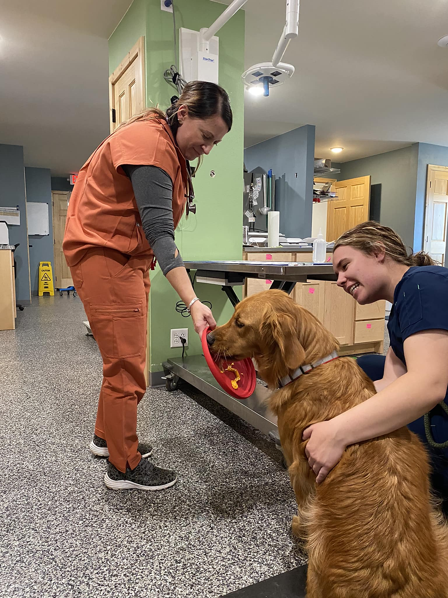

Larry the golden is enjoying his vet visit! At Leading Edge Veterinary Services, we strive to provide veterinary care that is as compassionate as it is informative. Grace, one of the veterinary technicians, is providing the cuddles and Dr. Cook is using a little cheese therapy. Larry didn’t even notice his vaccines. He started out a little unsure but he left loving his vet visit! When we take your animals out of the room, we are doing our very best to be efficient, effective and stress free. Sometimes a little cheese therapy helps!
